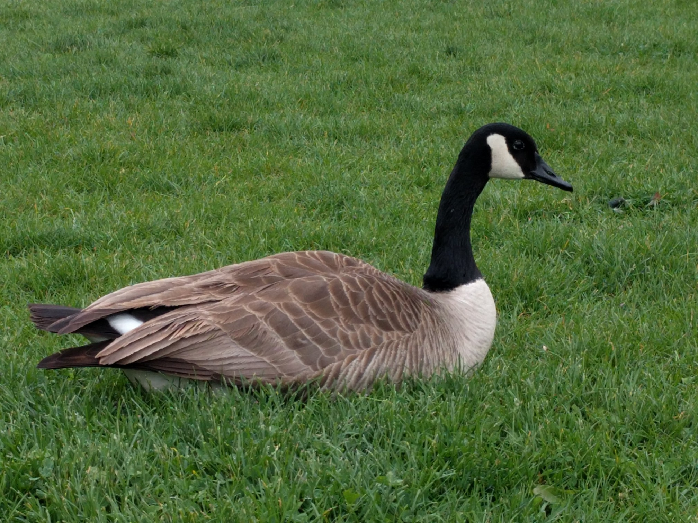
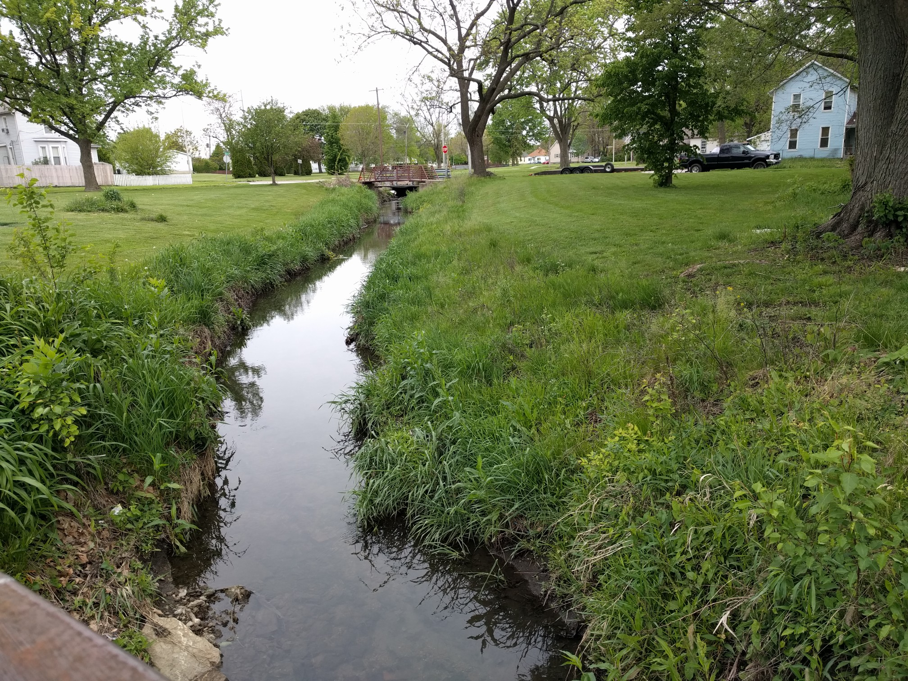
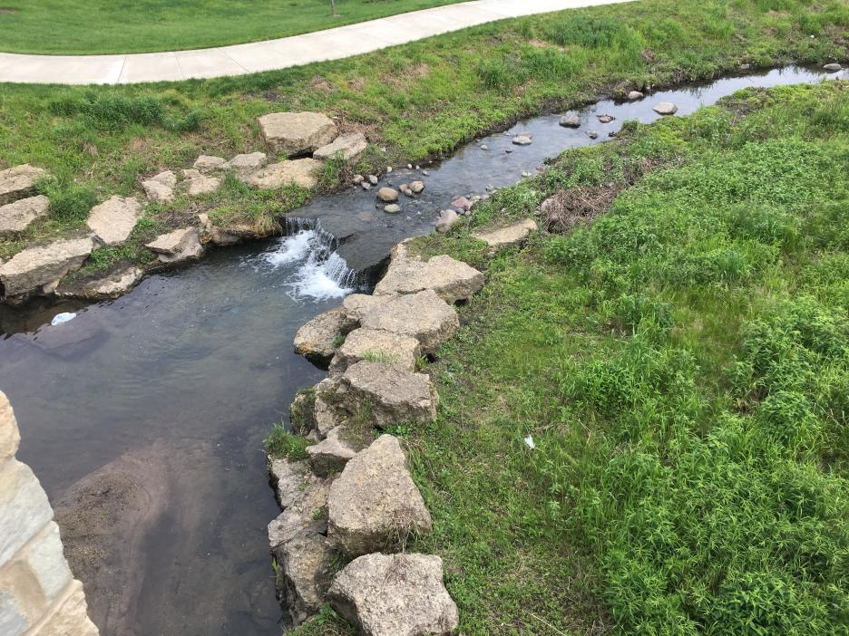
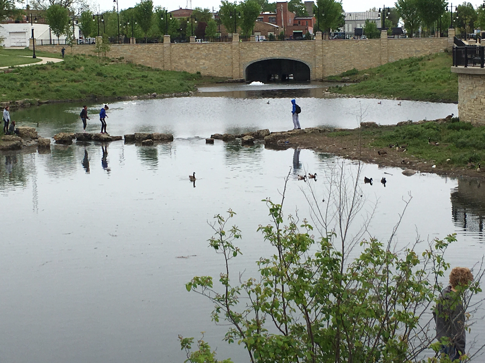
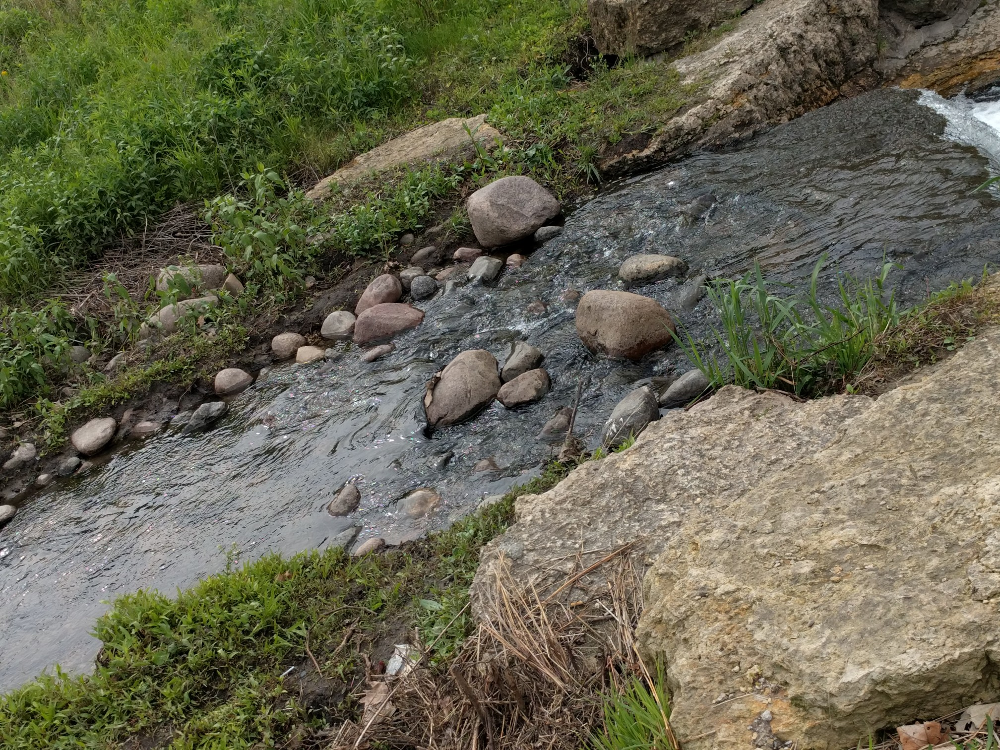
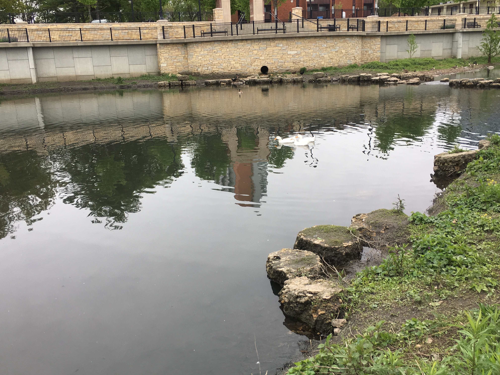

Title
This is a poetry template.
I'm doing myself a poetry.
This is the next stanza.
Testing the line spacing.
I hope I remember to delete this.
by [Name]

Why
Does my friend want me to walk up to that goose?
I am scared for my safety.
by Li

Hidden away
Above the stone ledges
Is a fountain.
The water is clean here,
But it is deep, and I am much more scared
Of falling in.
by Li

The water looked low, and I struggled to believe how high it could rise.
Several days later, I walked past it on a bridge, rain dripping from my hair.
It looked like a proper river now,
But I could not pause to look at it.
by Li

There were two pieces of paper
Contained within that notebook.
The wind pulled them both down the hill,
And into the water.
One was rescued, but it wasn’t the one I cared about.
The one I cared about sunk down into the river.
by Li

I wore gloves so that I wouldn’t touch the river with my bare hands.
I wore rain boots too.
There was a hole in one of them,
So I touched the river with my bare feet instead.
by Li

He said they burn here.
He said it helps the plants.
I can imagine it;
The flames writhing along the bank,
Losing light where they skimmed the water’s surface.
I can imagine it;
The ash and dirt turning quickly into greenery,
Springing into vibrant, colorful flowers in a matter of weeks.
But now, it is just damp enough to be uncomfortable,
And not damp enough to paint a layer of life onto the plants.
The riverbank will never burn like this,
And the night sky will not reflect the flames
Down to a lonely girl.
by Li
I have barely gone down to the creek.
Does that seem odd?
It’s exactly the sort of place I could imagine myself sitting,
Sketchbook and pencil in hand.
But to be fair, I fear the rain would ruin my drawings.
And fairly recently, I can remember the wind blowing so strongly
That I thought I would be pushed over the edge,
Into the cold and unforgiving river.
by Li

Apparently, this creek was made for people.
Not for swimming, but certainly for falling.
Wikipedia says “Boneyard” may have come from the remnants
Of drowned college students who took another way out.
But can we trust that?
I mean, it’s Wikipedia,
And not even they know for sure.
People certainly fell in the creek, though.
Apparently, college freshman used to be pushed into the creek.
Of course, now the river is far lower, and surrounded by manmade walls.
It’s a lot longer to fall, so anymore
I don’t think that would work so well.
by Li

I’m sitting here, writing poems about a creek.
A creek.
Not even a poem about a creek;
I’m aiming for at least twelve.
How much can you pull out of one creek?
Hopefully twelve poems.
I could be at home watching Doctor Who right now.
by Li

Breezes streak across the water’s surface and ruffle the grass.
One lone red flower draws the eye down the hill.
New developments for an old river.
Eyeing the geese in case they attack.
Yellow flowers and yellow weeds blend together.
All of the animals hide from the rain.
River water flows along, chilling feet.
Dams divert the water, changing a flood hazard into a source of beauty.
by Li

Untitled
Lady Nature
With vines coiled around wrists
Like serpents
With a crown of sunset shaded hair
A majestic sight
Some would say
But
Her once stainless skin’s
Splotched with muddy brown
And Aluminium cans
Trail in her wake
Skin’s feverish to the touch
A sad sight
Some would say
by Betty

Canada Geese (Are The Stuff of Nightmares)
A lone goose approaches me
Slender neck bent low
And hisses a war cry
I’m scared of geese
Please go away
I don’t want to die
by Betty

Nature
Standing here
Engulfed in the scent of petrichor
Engulfed in the mutterings of running water
I would very much like to
Close my eyes
And be
Engulfed in Nature
by Betty
Plastic Bag
Drifting through the water’s
A plastic bag
Undulates in the current
by Betty

Rising
Water levels rise
Rain drops splotch against umbrellas
Drops that race down curves
Clothes chillingly soaked
Cling to my skin
by Betty

Ducks
In the creek
A trio of ducks
All in a row
Colored snow white
Lazily paddle pass me
by Betty

Mud
Nature is not always pristine green grass
Sometimes it’s a crunchy concoction of dirt and foliage
Nature is not always scintillating azure waters
Sometimes it’s muddy liquid slosh
Nature is not always sunbathing turtles and snakes
Sometimes it’s being beleaguered by buzzing bees
Nature is not always ta symphony of bird calls
Sometime’s it's the coo of the local pigeon
Nature is not always the exotic beauty of flowers
Sometime’s it’s the thorned stems of weeds
Nature is not always perfect
But was perfection necessary in the first place?
by Betty
Boneyard Creek
I’m in a world of green
Sinking in sounds
Of the bubbling creek
Here where
The scent of petrichor
Seems permeated
Into the very atmosphere
And
I can feel the scraggly touch of plants
I wouldn’t want to be anywhere else.
by Betty

Why I Hate Nature
Nature with your waters
Frigid to the touch
That causes cuffs of cold
To clamp on my shins
Nature with your army of wildlife
With insects that buzz endlessly
With blood thirsty geese
And fuzzy plants
That leave trails of irritation
Once skin meets leaf
Nature can be horrendous
But I suppose
Lady Nature has her own sort of charm
by Betty

What Do Geese Dream of?
Three geese curled in balls
Sleeping
With a bush of grass
For a blanket
And the mumblings of running water
For a lullaby
by Betty